Built a full identity and access management environment in Microsoft Entra ID — provisioning users, enforcing RBAC, onboarding external guests, running help desk operations, and investigating sign-in and audit logs.
What I built
A full Entra ID tenant configured to simulate real enterprise IAM operations — provisioning internal users with appropriate roles, onboarding a B2B guest contractor, assigning department-based security groups, running common help desk tasks, and reviewing the logs those operations generate.
Key outcomes
Phase 1–2
Tenant Setup
Validated the Entra ID tenant baseline — domain, licenses, identity surfaces — before provisioning anyone.
Phase 3–4
Identity Provisioning
Created 6 internal users across departments with appropriate roles, then onboarded an external contractor via B2B guest invite.
Phase 5–6
Access & Lifecycle
Built RBAC security groups by department, then ran real help desk tasks — password reset, suspension, restore.
Phase 7–8
Monitoring & Audit
Reviewed sign-in logs for successes and failures, then traced every admin action through the audit log.
Phase 9–10
Security Posture
Assessed the Identity Secure Score, reviewed the Conditional Access surface, and documented the full IAM architecture.
Before provisioning anyone, the tenant baseline was confirmed — domain, license tier, and existing identity objects. Then 6 internal users were created across IT, HR, and Finance, each with roles scoped to their actual responsibilities. Admin privileges go to IT only; everyone else is governed through group membership.
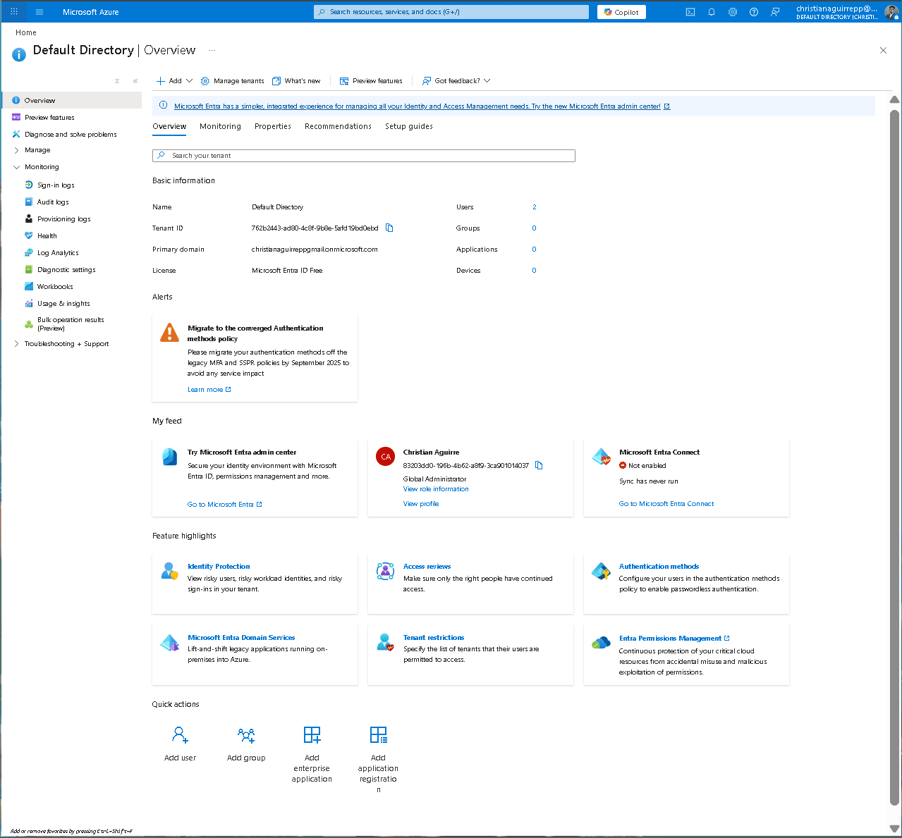
Default Directory overview confirming tenant identity and baseline config
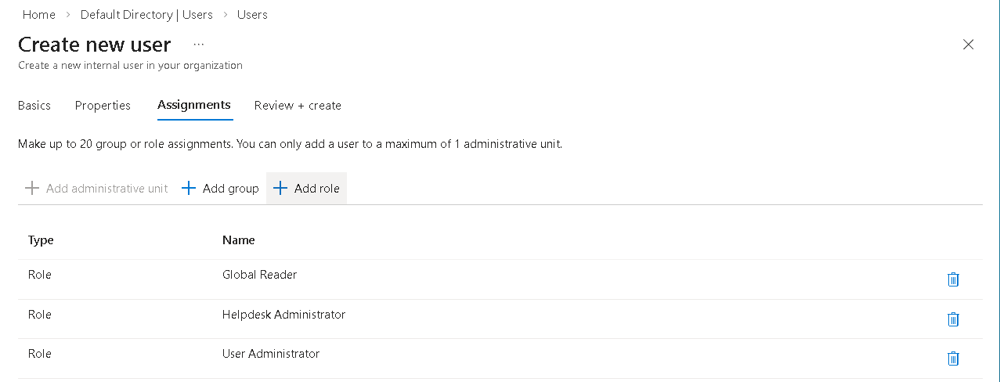
it.admin role assignments — three scoped directory roles applied at creation
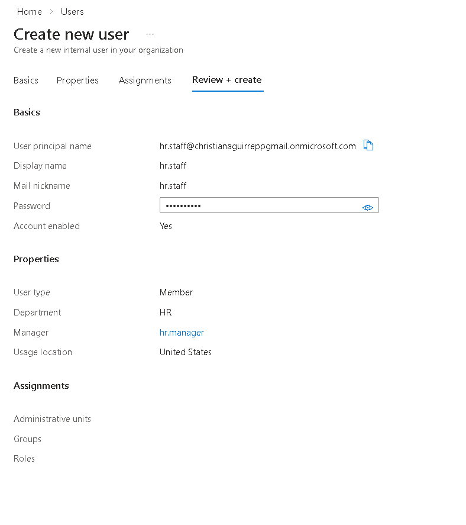
hr.manager — HR dept, manager assigned, no directory roles assigned directly
An external contractor was onboarded using Entra B2B collaboration. Guest identities let external users authenticate with their own credentials while still being fully governed — group membership, attribute enrichment, and audit logging all apply the same as internal users.
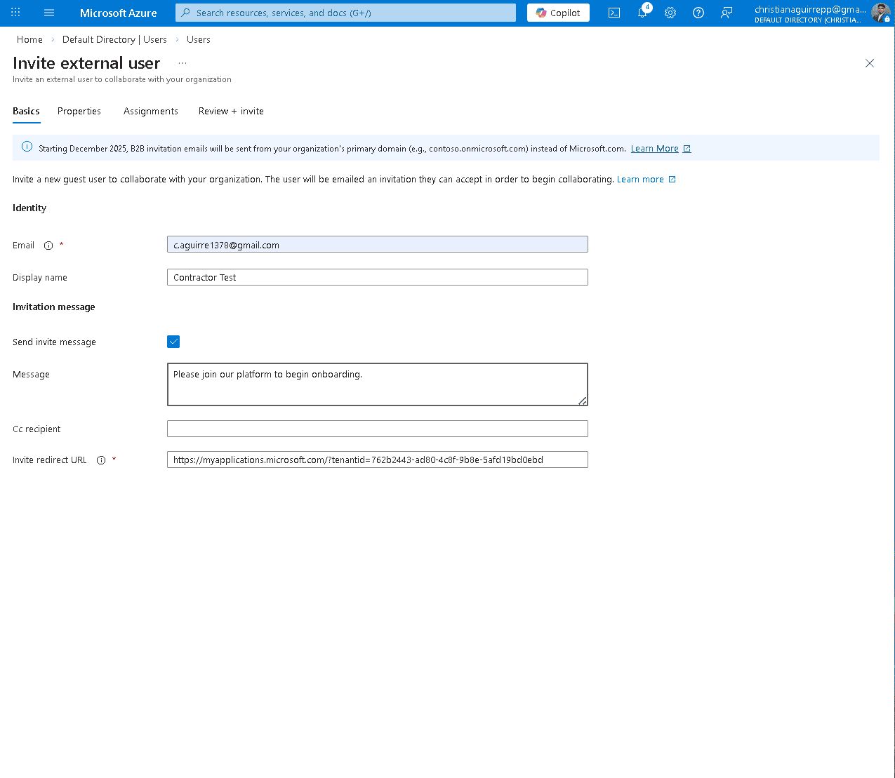
Invite form with custom onboarding message before submission
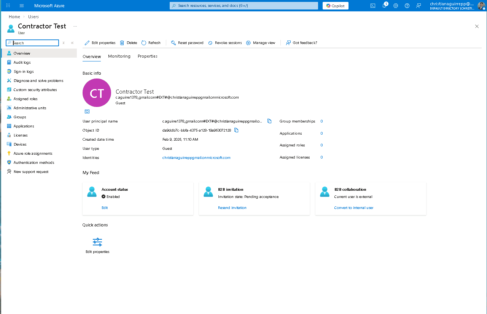
Contractor Test — Guest user type, #EXT# UPN, B2B invitation pending
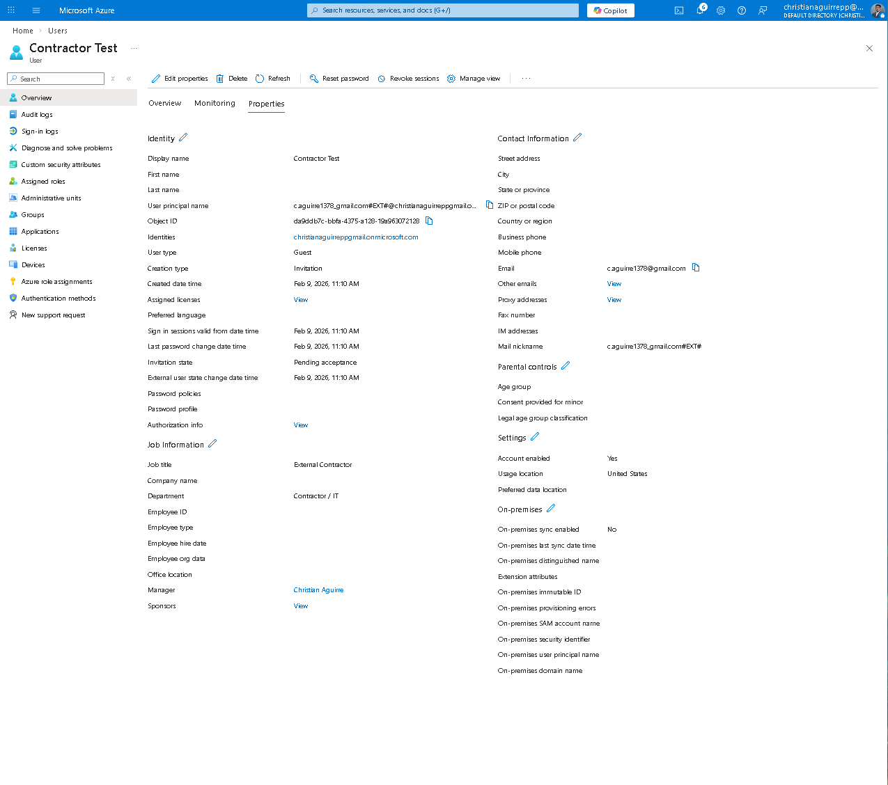
Guest Properties — job title, dept, creation type: Invitation all visible for governance
Three department-based security groups give every user a defined access boundary. Assigning permissions at the group level — not per user — keeps the model auditable and easy to maintain as the org changes. The external guest sits in IT-Team alongside internal IT accounts, demonstrating that B2B users can be governed within the same RBAC model.
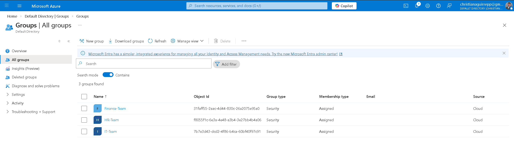
All three security groups — Finance-Team, HR-Team, IT-Team with Assigned membership
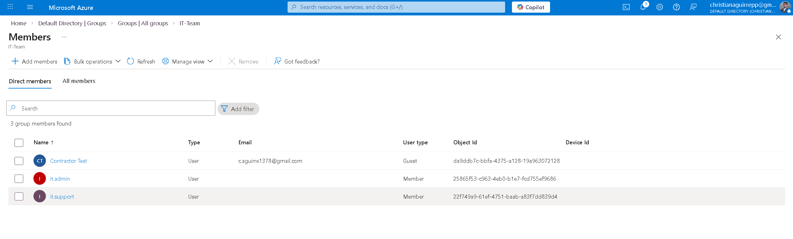
IT-Team — Guest contractor and internal IT users in the same group, identity type clearly differentiated
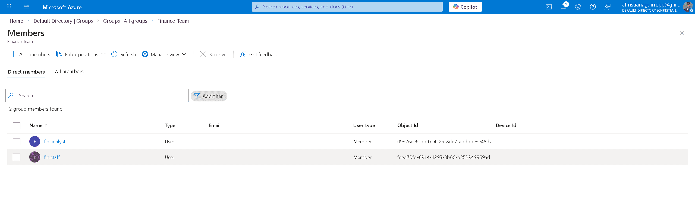
Finance-Team — fin.analyst and fin.staff confirmed as direct members
Three common Tier 1 tasks were executed end-to-end: password reset, account suspension, and user restore. Each was validated on both the admin side and the user side to confirm the controls actually work in practice.
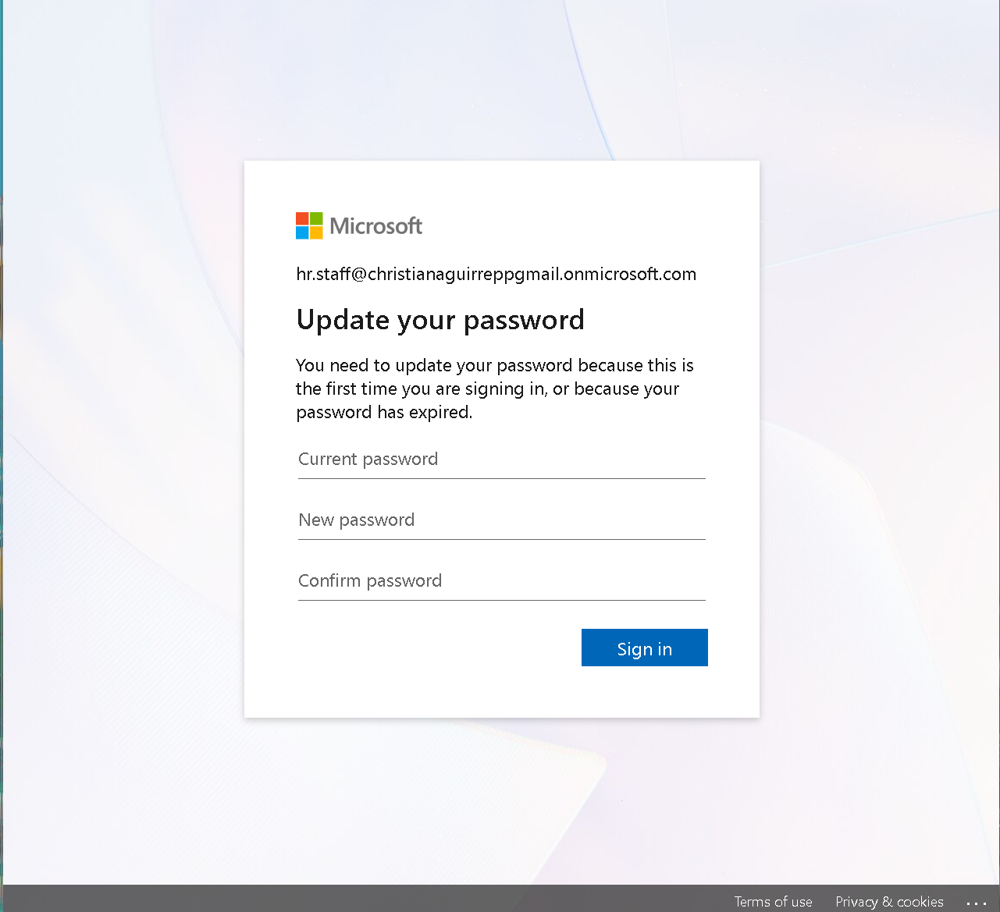
hr.staff prompted to update password on first sign-in — forced reset confirmed
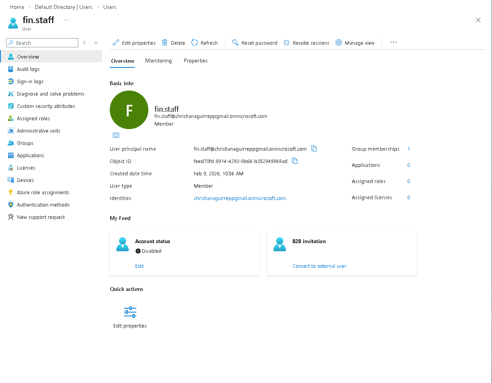
fin.staff — Account status: Disabled, identity preserved for restore or audit
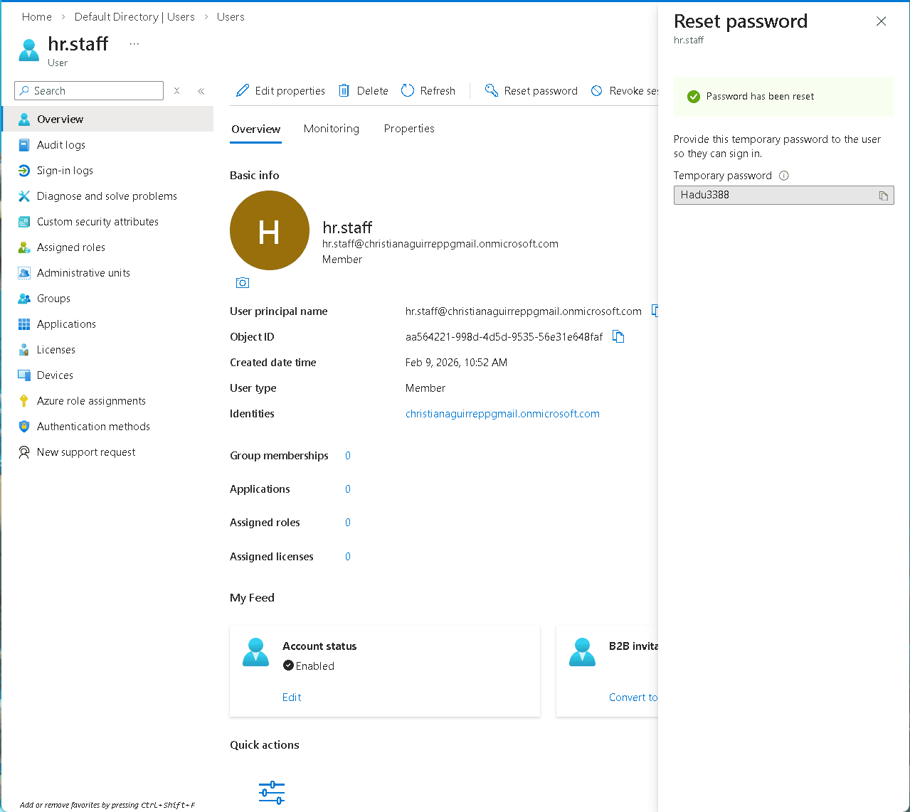
Admin-side reset panel — temporary password generated for fin.staff

hr.staff signed into Azure portal — clean access state confirmed after restore
Authentication events were generated intentionally — sign-in failures from temporary passwords followed by successful logins after reset. The audit log then captured every admin action from the lab, giving a complete, timestamped chain of events.
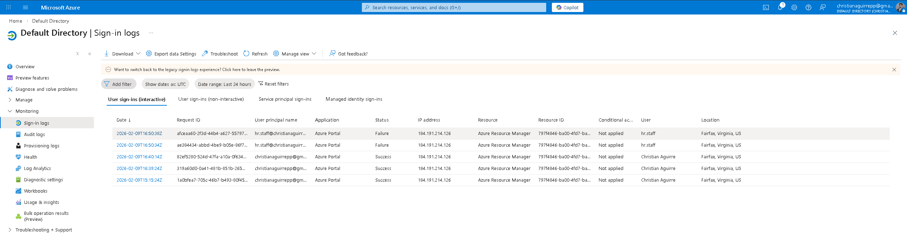
Sign-in log — hr.staff failures followed by admin successes, with IP and location captured
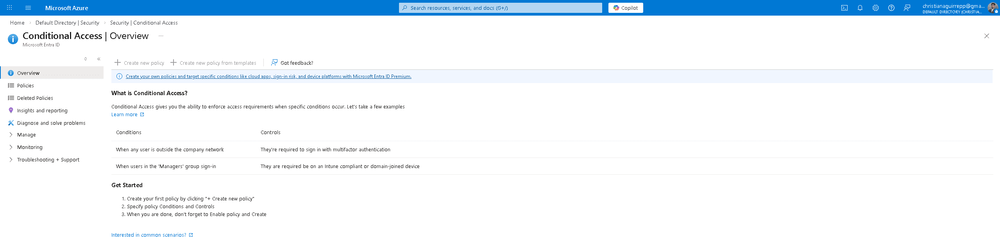
Audit log — group creation and member assignment events from Phase 5, fully timestamped
The final deliverable maps the complete identity flow built across all ten phases.
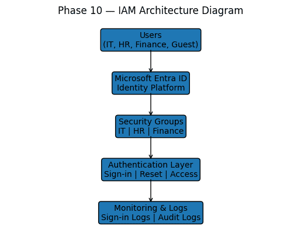
Users → Entra ID → Security Groups → Authentication → Monitoring & Logs
The Identity Secure Score came in at 54.17% with 5 open recommendations. The biggest gap: no Conditional Access policies are active. That's the highest-priority fix — without it, anyone with valid credentials can sign in from anywhere with no additional verification. The hardening plan below addresses the score gaps in order of impact.
Strengthen the identity layer itself.
Control how and where access is granted.
Keep monitoring sharp over time.
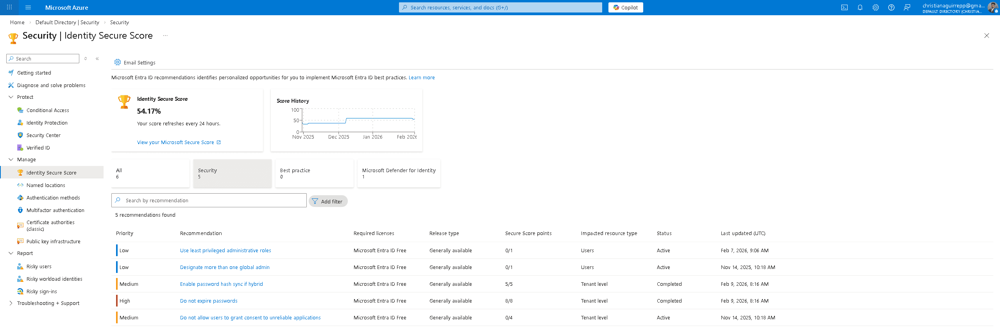
Identity Secure Score — 54.17%, 5 open recommendations, score history since Nov 2025
This lab covers the full IAM operations cycle: stand up the tenant, provision identities with appropriate roles, enforce access through groups, run the help desk tasks that come up every day, and verify that everything is logged and traceable. The security posture review at the end ties it together — showing where the gaps are and what the hardening roadmap looks like.